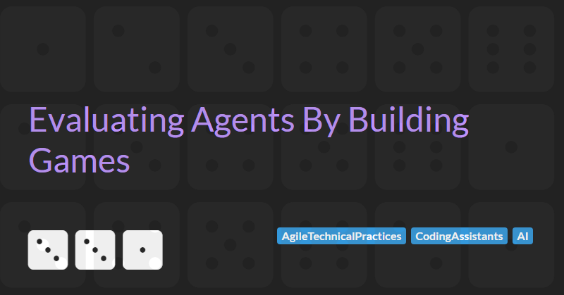

Evaluating Agents By Building Games
There is a lot of hype around the capabilities of AI Agents to write code. Anthropic's CEO Dario Amodei claimed that nearly all code would be written by AI within the next year.
In a previous post, I examined the general usefulness of coding assistants and was critical of their claimed benefits. I argued that many of the major features have minor value at best and some should be avoided.
In this blog post, I will explore how to build a simple browser-based game using React with the assistance of GitHub Copilot Agent. I will try to cut through the hype to examine the real benefits of coding with agents.
For this experiment I will use the recently announced a new Agent mode preview enhancement to GitHub Copilot.
This new agent mode claims to be capable of iterating on its own code, recognising errors, and fixing them automatically. It can suggest terminal commands and ask you to execute them. It also analyses run-time errors with self-healing capabilities.
Evaluation Metrics
I believe simple games are a great way to assess the capabilities of AI Agents because they involve multiple layers of complexity. They require high-level game logic while also integrating visual, audio, and interactive elements. All of these aspects impact the overall quality of the game.
Games like these are also provide an intuitive way for humans to evaluate an AI Agent's performance. By playing for just a few seconds, we can quickly gauge the game's design quality and determine how effectively the agent was at making decisions.
As well as evaluating the agent from the gameplay perspective, we can also evaluate from the functional perspective and a code perspective.
On the functional side, we can assess how many of the features were implemented correctly by the agent and how well these features were implemented.
From a code perspective, we can look at the correctness, quality and maintainability of the generated code.
As part of this evaluation I will rank each iteration of the game in these three categories: gameplay, functionality, and code.
Getting Started
If you are following along at home then, the first thing you need to do is get access to Copilot. Fortunately Copilot now offers a free tier - so you can try out a limited version of the tool for free.
You also need to Download Visual Studio Code Insiders build and then you need to enable the agent mode setting for GitHub Copilot Chat (see the instruction in the GitHub blog announcement article).
The First Prompt
Getting a new project started is one of the hardest things to do in software engineering. There are many choices to be made around which technology, frameworks, and libraries to use. For front-end development this is even more difficult, just check out the Days Since Last JavaScript Framework.
For our game project we will delegate much of this responsibility to the agent via the project prompt. This will outline the functionality we want the agent to build for us along with a couple of technical choices.
Here is the gist of the prompt I used to get the project going:
Buzzer Bee is an endless side-scrolling game. The player controls a bee that
must navigate through a series of obstacles while avoiding collisions. The
game is built using React and utilizes HTML5 Canvas for rendering.
...
The full spec I used for the Buzzer Bee game prompt is available in my GitHub repo here: SpecPrompt.md
Functional But Not Fun
The output generated by the agent was underwhelming to say the least. Here is a screen grab of the initial version of the game that was generated from the above prompt:
Gameplay score: 1 / 10
Many Missing Features
While the gameplay was disappointing, the game was working. However a number of features had not been implemented. Here is a list of features that were asked for and whether they were implemented by the agent:
| Feature | Implementation | Notes |
|---|---|---|
| The player controls a bee that constantly moves forward. | Yes ✅ | |
| Clicking/tapping makes the bee flap and ascend; releasing lets it descend due to gravity. | Partial ⏳ | No tap / mobile support |
| The game ends when the bee collides with an obstacle or the ground. | Yes ✅ | |
| Vertical honeycombs (top and bottom) act as obstables with randomly generated gaps. | Partial ⏳ | Obstacles plain rectangles |
| The gaps become smaller over time to increase difficulty. | Yes ✅ | |
| The player earns 1 point for each set of honeycombs successfully passed. | No ❌ | Score increases on every render frame and is not limited to passing obstacles |
| A high score is stored using localStorage. | Yes ✅ | |
| Pixel-art style bee character. | No ❌ | No Bee. Simple SVG image generated by Agent |
| Colorful honey-themed background with moving parallax effect. | No ❌ | Plain background. No theme. No parallax. |
| Animated buzzing effect on the bee. | No ❌ | No animation |
| "Game Over" screen with retry button and best score display. | Partial ⏳ | Basic game over outside of main game canvas |
| A gentle buzzing sound while the bee is moving. | No ❌ | No audio |
| A "flap" sound when the player clicks/taps. | No ❌ | No audio |
| A "collision" sound when the bee crashes. | No ❌ | No audio |
| A point-scoring sound effect when passing through obstacles. | No ❌ | No audio |
| The game starts with larger gaps and slower movement. | Yes ✅ | |
| Speed increases gradually, making the game more challenging. | Yes ✅ | |
| Randomly placed flower bonuses that provide a short burst of invincibility. | No ❌ | Not implemented |
6 features implemented, 3 partially implemented, and 9 not implemented.
Functionality score: 3 / 10
Technical Problems
When I first asked GitHub Copilot to generate the starting point for my Buzzer Bee game, I expected a solid foundation or at least something close. What I got instead was a reminder that while the agent can be helpful, it still needs a lot of hand-holding.
Right off the bat, Copilot scaffolded the project using Create React App . While this was once a standard choice, it is now now officially sunsetted by the React team. Not ideal. I had to intervene early, explicitly telling it to use Vite instead. Once I gave that nudge, Copilot corrected course and generated a working Vite setup. But it was a good early sign that you can’t rely on Copilot to keep up with the latest best practices unless you explicitly ask for them.
Another hiccup: I had asked for TypeScript, but the generated codebase was mostly plain JavaScript. I had to go back and explicitly request TypeScript support. And even then, had to manually clean up and fix types across the project.
The main gameplay logic, the actual code that made the bee buzz, was all dumped into a single Game.tsx file. That file became increasingly unwieldy as I added features. Each time I prompted Copilot to implement something new, like scoring or instructions, it would blindly append the logic to Game.tsx rather than splitting it into reusable components. Before long, the file was doing everything: rendering, managing game state, handling input, and drawing to canvas.
To make matters worse, the first time I ran the app, the console lit up with Maximum update depth exceeded errors. Copilot had mishandled useEffect and useState. It was a clear sign that while Copilot doesn’t really understand React or how it should be used in a real app.
Code quality / maintainability score: 3 / 10
Overall scoring
Taking into account the three aspects of gameplay, functionality, and code I would rank the output generated by the agent in this scenario as 2 / 10 - poor and disappointing.
Refinement
Not willing to give up at the first hurdle, I persevered with the game and attempted to use the agent to refactor the code and incrementally add missing features - maybe the agent was going to be better at adding features to the existing code than it was at generating the initial game code?
Refactoring the Buzzer Bee game using GitHub Copilot was a rollercoaster. At times, the agent felt like a decent assistant but most of the time it felt more like a rogue intern with too much creative freedom.
Image generation, which I tried for a number of the core game assets, just did not work at all. Maybe this is to be expected as its not really part of the core capabilities I would expect in an agentic coding assistant. But, even though the agent could not generate the images I wanted, it still created useless placeholders such as the smiley face SVG file that was supposed to look like a flying bee.
I hoped that Copilot's performance in actual code would be a bit more promising.
One highlight was when I asked Copilot to correct the scoring mechanism. Initially it just increased the score when each frame rendered instead of only when the bee passed an object as had been asked in the game spec prompt. Once I pointed out this error, it smartly introduced a passed field to my Obstacle type and implemented the logic to prevent multiple scoring for the same obstacle and it got it right on the first try. That was a clear win.
Encouraged by this, I asked it to create a scoring component. The first attempt was a mess and had to be reverted, but on the second try, it followed the game’s existing patterns, built a new GameObject class, and the results were solid. This back-and-forth showed me that Copilot can learn from context but sometimes it needs multiple goes to get something close to right.
However, as the complexity of the main Game.tsx file grew, the agent started to slow down noticeably. It raised a flag for me: while it works well on toy problems, scaling Copilot into a real project can introduce frustrating lag and reduce productivity.
A more serious challenge came when implementing a pre-start state to the game (when the bee flies automatically without the score and obstacle components being rendered). The Agent's first version of the code introduced complex if...else logic in the render function making the code difficult to understand. I fixed the issue by asking the Agent to revert this change and manually split the render function into separate functions for each state. This made the code cleaner, but the changes the Agent made introduced a subtle bug where obstacles no longer rendered when the game started. Clearly the agent needs sufficient guidance to generate both clear and accurate code.
Another issue cropped up when I asked it to add on-screen instructions for the pre-start state (telling the player to "Tap of click to start"). Copilot decided to drop the new object into the existing ObjectFactory.ts file - which promptly broke the factory. Reverting the change and asking it to move the logic to a new file fixed things. But again, it exposed a limitation: English is just too ambiguous sometimes. You need to use very precise, technical language and have a strong mental model of your project’s structure to get consistent results.
As the project grew, even small visual details became tricky to implement using Copilot. As an example, after the instructions were added, the score display shifted out of alignment. This turned out to be because the context.textAlign setting had been changed in the instructions component but not reset in the score component. I couldn’t get Copilot to fix it properly, so I ended up adjusting the alignment manually.
Finally, when I added a context provider for background music, Copilot completely duplicated the Game component instead of wrapping the existing one. I reverted and did it manually, but from then on, any further prompts to change the music context caused the agent to repeat the same duplication mistake.
What I Learned
Copilot can seem like it could be a boost for simple tasks. But it still struggles with ambiguity, scaling across large files, and maintaining stateful context in a complex codebase.
When it works, it can definitely save time. But it needs a developer who can think critically, spot subtle bugs, and guide it with crystal-clear instructions.
The screenshot below shows the final version of the game - a much improved version of the original game generated by the agent. If you want to see how the game works you can play the game on my website or check out the code in my GitHub repo.